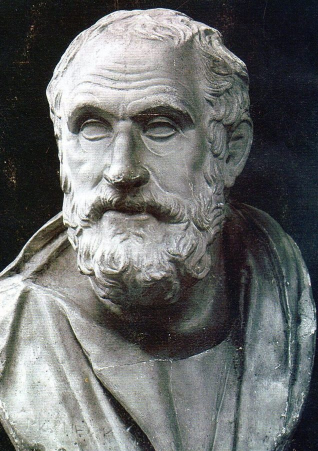
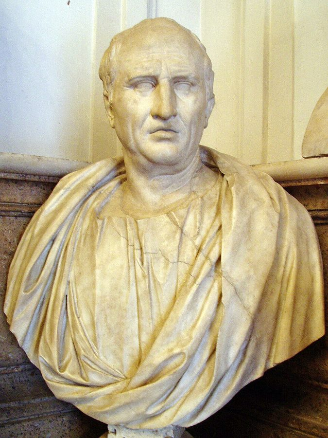

no-nonsense
… much a no-nonsense type of person …
讲求实际、不爱听空谈的人
nonsense 是废话，no-nonsense 是不容废话。作者用它解释加图为什么受不了希腊人的思辨。
这一章先讲古人，再骂今人。前半回到两千多年前：一位希腊哲学家在罗马连讲两天，第二天把第一天的道理全推翻；一位罗马演说家宁可按可能性行事，也不怕前后矛盾。中间从普鲁斯特小说里一位记不起旧观点的外交官，跳到长岛网球场上的索罗斯和一幅涨了价的画。后半换了口气，点名三位诺奖得主和一家倒下的对冲基金。读的时候抓一条线：一个人怎么理解概率，和他肯不肯改口，有什么关系。

第 12 章开了第三部：作者承认自己斗不过情绪，立了「维特根斯坦的尺子」，又讲交易员和鸽子的迷信。这一章退后一步，从古人讲起：概率到底是什么。§1 作者回指第 3 章，说概率首先是一种内省；§6 兑现第 12 章 §3 预告的「十个西格玛」，并回指第 1、5 章的 1998 年夏天和第 3 章 §11 抨击席勒的默顿。下一章是正文的最后一章，转向斯多葛派。
§6 作者说 LTCM 几乎拖垮金融体系，是马科维茨理论的「直接后果」。这是他的论战说法：通行的事后分析多把 LTCM 的倒下归于高杠杆和市场流动性突然枯竭，马科维茨本人和这家基金无关。详细的在页末。
一个人懂不懂概率，和他肯不肯改口，有什么关系？
读的时候带着这几个问题。不用先找答案，读完回来对照「检查一下理解」。
前三节是一条往回走、又忽然跳回现代的时间线：§1 两句话立题，§2 跳到公元前 155 年的罗马，后半再往前跳到西西里最早的修辞家；§3 从一神教、中世纪的阿拉伯人讲到西塞罗，一下子又跳到 1968 年巴黎的涂鸦。§4 进了普鲁斯特的沙龙，再突然落到交易室和长岛的网球场，读到这里会觉得「突然跳了」。§5 很短，一个可以自己做的测试，接着是进化和夫妻的设想。§6 是全章的转折：开头一句说概率还有「另一个故事」，口气从讲古变成开骂，点名马科维茨、LTCM 和诺贝尔奖委员会，中间夹着一段很干净的推理。§7 一段话收尾。
这一页就是原书和译本的第 13 章，一共 7 节。粗体是本站给的节名，后面是档和译本字数；下面是译本的小标题和这一节在译本电子书里开头的几个字（搜它就能跳过去），再下面是英文原文的开头。「先读」是这一章的骨架，「有空」好看、跳过不丢线，「可跳过」读不读都行。读完打个勾。
先把这一页用到、作者默认你懂的几个概念讲一遍。讲的是概念本身，作者拿它推出什么，读原书时自己看。别页讲过的概念，点链接过去看。
概率有两种常见的理解。一种是频率：同一件事重复很多次，某种结果出现的比例，比如抛一万次硬币，正面大约占一半。另一种是把握的程度：你对一件事有多大信心，比如「这个 bug 七成出在缓存里」。这件事只发生一次，谈不上重复，但你照样会给它一个数。
后一种叫主观概率。统计学的贝叶斯学派用它，还给了严格的规矩：每来一条新证据，就按一定的算法修改把握。两种理解用的是同一套数学，分歧在「这个数从哪来、能不能变」。作者站在第二种这边，而且用得更宽：概率是相信别的结果、别的原因也可能存在。
在这一页：§1 作者以此立题，§2、§3 讲古代的怀疑派怎样按可能性的高低行事，§6 拿它和「把概率当计算工具」对照。
东西一旦归了你，你给它开的价，就比你没有它时愿意出的价高。最有名的是马克杯实验：Kahneman、Knetsch 和 Thaler 1990 年发表的实验里，随机拿到杯子的学生开的卖价，大约是没拿到的人愿出的买价的两倍。同一只杯子，差别只在「是不是我的」。
它和沉没成本不同：沉没成本是因为已经花了钱、花了时间才不肯放手；禀赋效应是光「拥有」就让东西显得更值钱。程序员的例子：自己写的模块，总觉得比同样好的别人写的更值得留。后来也有研究（Plott 和 Zeiler 2005）说，换一种实验做法，这个差距会缩小，至今还在争。
在这一页：§5 作者说它是「信念的路径依赖」的一种表现，再给一个一幅画的测试。路径依赖本身见路径依赖。
投资组合就是你把钱分到哪些资产上。Markowitz 1952 年的论文给了一个算法：每种资产看两个数，一个是预期收益（平均能赚多少），一个是方差（收益上下晃得多厉害，开平方就是标准差，见波动）；再看几种资产是不是同涨同跌。不同步的资产放在一起，合起来晃得比各自小，这就是「分散投资」的数学。给定想要的收益，算法能找出晃动最小的配法。
要用它，得先知道这些数。实际中大家拿过去几年的数据去估：估出来的数本身就不准；过去几年要是风平浪静，算出的方差就小，里面可能根本没有一次罕见的大跌。
在这一页：§6 作者把它当「以计算替代思考」的代表，说它的前提是先知道未来的不确定性。
西格玛（σ）是标准差的符号。说一次变动是「几个西格玛」，意思是它有平常波动幅度的几倍大。如果变动服从正态分布（钟形曲线），倍数一加大，概率就掉得飞快：单日跌超 3 个标准差的机会约千分之一点三，按一年 252 个交易日算，约三年一次；5 个约一万四千年一次；10 个约 7.6×10⁻²⁴，算下来约 5×10²⁰ 年才一次，是宇宙年龄（约 138 亿年）的几百亿倍。
真实的市场不守这条曲线：大涨大跌比正态分布预料的多得多，统计上叫肥尾。1987 年 10 月 19 日美国股市一天跌了两成多；如果每天的标准差按 1% 算，那就是二十多个标准差。
在这一页：§6 LTCM 的合伙人把巨亏叫作「十个西格玛」事件，作者拿这个说法做推理。第 5 章亨利的风险报告里已经出现过它。
事情成了，归功于自己的本事；搞砸了，怪运气、怪环境、怪别人。社会心理学管这叫自利的归因偏差，被反复观察到。程序员熟悉的样子：上线没出事是因为代码写得好，出了事故是因为「流量异常」。
它的一个副产品是高估自己。Svenson 1981 年的调查里，93% 的美国学生和 69% 的瑞典学生认为自己的车技高于中位数。留意「中位数」：它是排在正中间那个人，按定义只有一半人在它上面，这么多人这样想，必定有很多人估错了。说「高于平均」就不一定，平均数会被极端值拉偏（见中位数和平均数）。
在这一页：§6 作者用它解释学者为什么把巨亏归于罕见事件。这一类心理偏误的总体见启发法和偏误。
按在书里出现的顺序排，标题前是节号。只讲到读懂这一页需要的程度。
公元前 155 年，雅典因为劫掠邻城奥罗波斯被罚 500 塔兰特，派三位哲学家去罗马求情，卡涅阿德斯是其中之一。两场演讲的故事出自后人（普鲁塔克、西塞罗、拉克坦提乌斯）的记述。censor 是罗马的高级官职，管人口登记和风纪。作者说三个世纪前苏格拉底就在这个学园里辩论，细节不严：学园是柏拉图在苏格拉底死后才办的，离公元前 155 年约两个半世纪。
科拉克斯（Korax）是西西里叙拉古的修辞家，通常和学生提西亚斯一起被当作希腊修辞术的开创者，年代一般定在公元前 5 世纪，书里写的是 6 世纪。高尔吉亚（Gorgias）也是西西里人，后来把演说术带到雅典。「最可能」（希腊文 eikos）的论证是法庭上的老办法：没有物证时，问哪种说法最合乎常情。作者的意思是，这种论证教人把几种可能分开，各配一个可能性。

1968 年 5 月，巴黎的大学生罢课、占领校园，工人跟着大罢工，一度动摇了戴高乐政府，史称「五月风暴」。那几周巴黎墙上写满标语，作者引的是其中一条。他说这群年轻人被多年来「必须显得聪明、前后一贯」压得喘不过气，口气半是调侃。
德诺波伊斯侯爵（Marquis de Norpois）是普鲁斯特小说里的人物，一位常出入沙龙的老外交官，不是作者编的。作者引的是小说叙述者对他的一段议论：他不是在撒谎，只是忘了。传真机那句是作者的调侃：从前的外交官靠社交打听消息。
罗赞（Jean-Manuel Rozan）是法国交易员，作者说他把自传写成小说，以免吃官司（书后注释列作 1999 年出版）。小说里的 Georgi Saulos（译本：「喬吉．邵勞斯」）就是索罗斯。故事里的行话：做空是押下跌（见做空）；回补（cover）是把借来卖掉的东西买回来，空头就此了结；went very long 是反手大量买进押上涨。汉普顿斯（Hamptons）是纽约长岛东头的富人度假区。Nigel Babbage 作者说是他见过最好的交易员之一，本站查不到更多。
长期资本管理公司（LTCM）是 1994 年在康涅狄格州格林威治开张的对冲基金（见对冲基金），Merton 和 Scholes 都是合伙人。它借的钱是自有资本的二十多倍；1998 年不到四个月亏掉约 46 亿美元，8 月俄罗斯违约后亏得最凶。9 月下旬，纽约联储把十四家银行和券商召到一起，它们出资约 36 亿美元接管了这家基金，没有动用公共资金。作者说的「诺贝尔经济学奖」不在诺贝尔遗嘱里，是瑞典央行 1968 年设的纪念奖，这一点他说得对。
作者把米尔的书说成比较专家「自以为的能力」和「统计上的能力」，这和书的主题有点出入：米尔比的是人的判断和公式的预测，专家高估自己，是从这个落差里看出来的。
作者只说「有人说过」。这个意思通常归于德国物理学家普朗克：他在晚年的《科学自传》里说，新的科学真理不是靠说服反对者取胜，而是反对者终于死去，熟悉它的新一代长大了。「一场葬礼接一场葬礼」这个短说法，据考证出自经济学家萨缪尔森。
读英文原文时值得停一下的词和句：交易员的行话、作者的反话和双关、熟词生义。灰色斜体是原句里连续的几个词，在英文电子书里搜它就能找到；标「每个字都认识」的，是每个词都眼熟、合起来意思却变了的，最容易读错。点「记下」收进词本。
对着译本读这一章时，下面这些地方会把人读歪。方框里是译本的原句，在译本电子书里搜它就能找到；灰色斜体是英文原文那一处。只收意思错了、反了、漏了的，措辞上的出入和台湾用语不收。全书的勘误汇总在译本勘误。
… probability is not about the odds …
译本：「機率不是談機運的問題」
odds 是算出来的赔率、几率数字。作者说概率说的不是这个数，而是相信别的结果可能存在。「機運」读着像运气，容易以为作者在说概率和运气无关，意思就偏了。
… as he did not hew stubbornly …
译本：「這可能是我們更敬重他的理由」
原文：从 Popper 那里学会自我批判的我们，也许（may）因此更敬重西塞罗，因为他不死守说过的话。译本的「他」紧跟在「巴柏」后面，读来像在敬重 Popper；「絕不會」也比原文说得满。
… a matter that can prove disastrous …
译本：「認為會在科學方面造成災難」
原文说：文化把自相矛盾当成可耻，这件事在科学里可能是灾难。译本加了「認為」，变成文化认为自相矛盾会给科学带来灾难，对自相矛盾的态度正好反了，和整章替改口辩护的意思对不上。
… have a manifestation of it called …
译本：「經濟學家把這種現象稱作敝帚自珍效應」
原文是经济学家把这种现象的一种表现叫禀赋效应。译本读来像「信念的路径依赖」就是禀赋效应的别名。前者说的是观念，后者是行为经济学里关于拥有物品的一个具体发现，范围小得多。
… a defect in the amygdala that …
译本：「可能源於扁桃腺的缺陷」
amygdala 是大脑里管情绪的杏仁核，扁桃腺（扁桃体）在喉咙里。同句的 psychopath 是「精神病态者」，指缺乏共情和依恋的人格，不是一般的精神病人。
… Probability entered mathematics with gambling theory …
译本：「機率隨著賽局理論而進入數學」
「賽局理論」是博弈论，20 世纪才有。原文说的是 17 世纪帕斯卡、费马那些人算赌局的学问，概率论正是从那里起步的。同段「賽局的規則」也是说游戏、赌局的规则。
… made absolutely no allowance in the LTCM …
译本：「LTCM危機爆發之後」
原文：在 LTCM 这件事上，他们完全没给「自己可能不懂市场、方法可能错了」留余地（made no allowance），上一句说他们以为风险能用科学方法「衡量」，按上下文，这句说的是他们押注、算风险时的盲点。译本把时间定在危机爆发之后，又把「没留余地」换成「不觉得自己会错」，读来只剩事后不认错；事后不认错，作者在 §6 后面讲学者怎样怪罪对手的那一段才说。
… getting some irritating fawning respect …
译本：「突然之間，我開始惹人嫌惡」
原文：我突然开始得到一些让人心烦的奉承和尊敬。烦人的是奉承，不是作者。紧接着一句说两位诺奖得主让他出了名，译本这两句连起来就自相矛盾了。
… comparing their perceived abilities to their …
译本：「比較專家的認知能力和他們的統計能力」
perceived abilities 是专家自己觉得的能力。整句讲的是自我评估和实际成绩之间的落差，「認知能力」读来像在比智力，下一句的意思就接不上了。
… above the average (and the median) …
译本：「優於平均值（中位數）」
原文是「高于平均数（也高于中位数）」，两个都说。译本把中位数放进括号，读来像平均值就是中位数。这两个必须分开：高于中位数的人按定义只有一半，八九成人这么想才说明他们高估了自己。
读完这一章再看。下面是作者在这一章里的主张，由本站按主张之间的逻辑重新组织，不按原书的顺序；每条后面是节号，拿不准就回书里那一节再读一遍。
他说数学家会教你怎么算概率，可古人一直把概率当成主观的、会变动的信念。怀疑派的主旨是：没有什么能确定地接受，但可以得出不同程度的可能性，用来指导行动。他拿卡涅阿德斯两天两场相反的演讲作示范，再把这条线往前追到西西里的修辞家，往后追到西塞罗。
§1 §2 §3现代文化要人忠于自己说过的话，改口就像背叛。他拿普鲁斯特笔下记不起旧观点的外交官说明这种羞耻，再说这位外交官该去当交易员：他见过最好的交易员之一 Nigel Babbage 和索罗斯，都能毫不难为情地反手，信念没有路径依赖。
§4他的测试：一样东西按现价你不会买，就没有理性的理由留着，留着只是感情投资。他说有理由相信，进化让我们可能（may）忠于投入过时间的观念；成名的学者不会说贬低自己旧作的话。照这样说，按道理评估交易的人会是基因上的怪胎。杏仁核那句是他转述的研究，没给出处。
§5概率进了数学，成了计算工具；只有规则写清楚的游戏才算得出风险，大自然不给规则手册。他把 LTCM 说成马科维茨理论的直接后果；它的合伙人把巨亏叫作十个西格玛事件。按维特根斯坦的尺子，这句话透露的是说话的人：要么碰上了宇宙历史里都难见的事，要么根本不懂。他让读者自己挑。
§6出了事的学者不改理论，反倒怪市场上的对手像秃鹫，把失败推给罕见事件，这是归因偏差：成功归于本事，失败归于运气。索罗斯却逢人便说自己会犯错。科学家是凡人，多半还更固执；但科学比科学家好，新观念等老一辈退场才站稳。
§6 §7合起来：真把概率当成「我有几分把握，事情还可能是别的样子」，就不会把旧观点当成必须捍卫的财产。肯改口、先承认自己可能错，是作者想让读者带走的本事，也是他对整个金融学界的指控。
There is no rational reason to keep a painting you would not buy at its current market rate—only an emotional investment.— §5。本站译：一幅画，按现在的市价你不会买，就没有理性的理由留着它；留着只是感情上的投资。
一句下判断的话，整章最能拿来用的工具压在里面。关键是 emotional investment：作者把「感情」和「投资」放在一起，是在说你以为自己在守一项资产，其实在守一份感情。它也适用于观点：如果今天第一次听到这个想法，你还会信吗？容易误读成「涨了就该卖」：测试问的不是涨跌，是「现在会不会买」。
we are a bunch of idiots who know nothing and are mistake-prone, but happen to be endowed with the rare privilege of knowing it.— §6。本站译：我们是一群什么都不懂、动不动就犯错的笨蛋，只是碰巧有一种少见的福分：知道自己是这样。
半是玩笑、半是经营哲学：作者说这是他从索罗斯那里学到的，每次公司开会先这样说一遍。前半句是自贬，后半句才是重点：知道自己会错，就会给犯错留余地，这正是他指责 LTCM 没做的事。译本：「但邀天之幸，很少人像我們這樣，知道這件事」意思到了。别把它读成谦虚客套，这是一条风控原则。
这本书 2004 年出第二版，书里讲的多是 1980–2003 年的事。下面挑出这一页里能被后来的研究或事情检验的说法，分「书里 / 当时 / 今天」几栏，并给一个结论。结论判的是标题里「书里的说法：」后面那一句。全书的这一节汇总在今天怎么看。
读完作者的主张，再看它站不站得住。每一块摆出三样：主流怎么看，作者怎么看，本站的评论。最后一句是本站对这一页的总体判断。
主流看法：金融收益不服从正态分布、大涨大跌远比钟形曲线预料的多，早在 1960 年代 Mandelbrot 就指出过；今天的风险管理普遍承认肥尾和「模型风险」，监管也要求做压力测试。
作者的看法：说出十个西格玛的人，要么懂得近乎完美、碰上了宇宙历史里都难见的事，要么根本不懂概率；两种解读互斥，让读者自己挑。§6
本站的评论：这是这一章最硬的一段，也是一个干净的贝叶斯推理：拿「模型错了」的先验去和「真碰上了」的概率比，后者小到可以不算。作者的数还说少了：按正态分布，10 个标准差不是「宇宙历史的几倍」一次，而是几百亿倍。说少了，他的结论反而更站得住。
主流看法：LTCM 倒下的通行解释是：借了自有资本二十多倍的钱，押很多「价差会收窄」的交易，1998 年俄罗斯违约后，市场上人人抢着要流动性，价差反而一起拉大，别的机构又在做同样的交易。马科维茨的组合理论今天仍是资产配置的基础，他本人和 LTCM 无关。
作者的看法：LTCM 几乎拖垮金融体系，是马科维茨理论的直接后果；这类学者以为风险能用科学方法量出来，从没考虑自己可能不懂市场。§6
本站的评论：「直接后果」是论战的说法，把一个学派、一位理论家和一家基金并成了一件事。作者真正打中的是一种习惯：拿过去的波动当未来的风险，再在上面加杠杆。这一点 2008 年又应验了一次。但把这一派学者的做法叫江湖骗术（charlatanism）就过了：作者说这套算法要先知道未来的不确定性，这没说错，马科维茨也没声称知道；问题出在把估出来的数当真、再加上杠杆的人。
主流看法：Tetlock 等人在「好判断项目」里发现，预测最准的人勤于改主意，而且多是一小步一小步地改。改口本身被研究支持；但一下子从做空翻成大举做多，不是他们典型的样子。
作者的看法：好交易员和索罗斯毫无难堪地反手，信念不受过去束缚；人「嫁给」观点可能是进化的结果，纯理性的人反而可能是杏仁核有缺陷。§4 §5
本站的评论：那幅画的测试是一件好工具，今天的行为金融也会这样教人。但作者的证据是两个交易员的轶事，索罗斯撤走罗赞的钱，他自己也承认对罗赞是坏事：不受过去束缚，对合作的人未必公平。杏仁核那句书里没出处，情绪和决策的研究结论不一（见第 11 章下半），别当定论。
本站的总体看法：「十个西格玛」那段推理值得带走，它教你听到「百年一遇」时先问说话的人懂不懂。那幅画的测试也好用。对马科维茨和诺奖委员会的痛骂，要打个折扣：方向有道理，「直接后果」「江湖骗术」是论战的修辞。古代那几节是作者借古人讲道理，细节别当史实读。
先在心里答，再点开。答错的那题，回书里把对应那一节再读一遍。
不是「正义不重要」，而是再有说服力的论证，也不能让知识变得确定：同一批听众，两天里被两种相反的道理说服。作者拿它当怀疑论最漂亮的一次示范。
西塞罗宁可按可能性行事，不因为自己说过就死守一个意见。从 Popper 那里学会自我批判的人会欣赏这一点；一般的文学教授却会挑他前后矛盾。
是同一种特质的两面：不受过去的立场和做过的事束缚。对索罗斯，这让他大赚一笔；对拿了他钱的罗赞，差点断送事业。作者说真正的投机者每天都从头开始。
买入价是过去的事，和留不留无关。问自己：如果手里是 60 元现金，会不会买这只股票？不会，就是「嫁给」了持仓，留着它只是感情投资。
两种解释：真碰上了宇宙历史里都难见一次的事，或者它的模型低估了大波动。哪怕你很信它懂行，后一种的可能也大得多。这句话透露的更多是说话的人，这就是维特根斯坦的尺子。
按定义最多一半人高于中位数，所以至少四成的人（90% 减 50%）估高了自己。这就是作者说的自我评估和实际之间的落差。
科学家是凡人，固执，爱替自己的论文辩护，很少被说服。但新观念会由新一代带进来，反对它的老一辈总会退场，科学整体还是往前走。
用一句话说这一页：
想一想：你有没有坚持了很久的一个观点或选择（一套技术栈、一个对某人的看法、一份工作）？如果今天第一次面对它，你还会选它吗？如果不会，是什么让你还留着它？
读过又忘了，从这里想起来。挑的是这一页最值得记住的故事和说法，不按原书顺序；每条后面是节号，想细看就回书里那一节。全书各页的这一节都收在全书回顾。
一句话：肯改口的人才懂概率；说出「十个西格玛」的人，更可能是自己的模型错了。
公元前 155 年，卡涅阿德斯头一天在罗马盛赞正义，第二天用同样动人的道理把它驳倒。老加图大怒，劝元老院把使节打发回家。
§21968 年巴黎学生墙上的一句标语。作者拿它和西塞罗放在一起：按可能性行事的人，有权改口。
§3网球场上，索罗斯上周还大讲要跌。市场暴涨后罗赞问他亏了没有，他说：大赚一笔，我改了主意，回补空头，反手做多。
§4两万买的画涨到四万。如果你手上没有它，会按四万买吗？不会还留着，就是「嫁给」了它，留着的只是感情。
§5LTCM 的诺奖得主把巨亏叫作十个西格玛事件。要么他们碰上了宇宙历史里都难见的事，要么他们不懂概率。作者让读者自己挑。
§6科学家固执、爱替自己辩护，但科学比科学家好：新观念等老一辈退场才站稳。作者预言 LTCM 之后也会这样。
§7